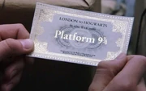

Los alumnos pertenecientes a cada casa no necesariamente tienen todas las cualidades que caracterizan a cada una de ellas. Hay casos en los que el Sombrero Seleccionador recibe estudiantes que le hacen dudar sobre a qué casa deberían ser asignados. En caso de que el Sombrero dude durante más de cinco minutos, a ese estudiante se le denomina Hatstall.
Muchas veces, el Sombrero Seleccionador pone a un estudiante en una casa por tradición familiar. Este es el caso de Draco Malfoy, Fred Weasley, George Weasley, Vincent Crabbe, Gregory Goyle, Ron Weasley, Ginny Weasley... Hay circunstancias, sin embargo, en las que se rompe esta tradición, como en los casos de Sirius Black y Albus Potter.
Llegada
Los estudiantes viajan hasta la estación King's Cross en Londres para abordar el Expreso de Hogwarts en la Plataforma 9¾. Para llegar hasta allí deben correr hasta la columna entre las plataformas 9 y 10. Después de un viaje de varias horas en dirección Norte, el tren llega a la estación enHogsmeade. Desde allí los estudiantes de primer curso son acompañados por Rubeus Hagrid hasta pequeños botes, los cuales (mediante magia) navegan a través de un lago a una gruta debajo del castillo de Hogwarts. Los estudiantes veteranos viajan hasta el castillo en carruajes llevados por thestrals. Cuando los estudiantes de primer año llegan por primera vez al castillo, no van directamente al Gran Salón

para empezar el Festín de Bienvenida sino que deben pasar por la Selección, una importante ceremonia en la que son repartidos en casas. Los estudiantes en Hogwarts se dividen en cuatro casas, cada una con el nombre de uno de los fundadores originales de la escuela( Gryffindor, Hufflepuff, Ravenclaw y Slytherin). Como Minerva McGonagall dijo en Harry Potter y la Piedra Filosofal: Después de un corto discurso de parte del Director o Directora,
Los estudiantes de primer año esperan en filas a ser llamados, en orden alfabético, por sus nombres. Uno por uno, los estudiantes son sentados en un banquillo en frente del cuerpo estudiantil, y un sombrero mágico, el Sombrero Seleccionador, es colocado sobre la cabeza del estudiante. El Sombrero analiza la mente del estudiante y le asigna a una de las cuatro casas basado en su personalidad e inteligencia. Después de decidir, el Sombrero grita el nombre de la casa que ha decidido y el estudiante se une a sus nuevos compañeros en la mesa de la respectiva casa.